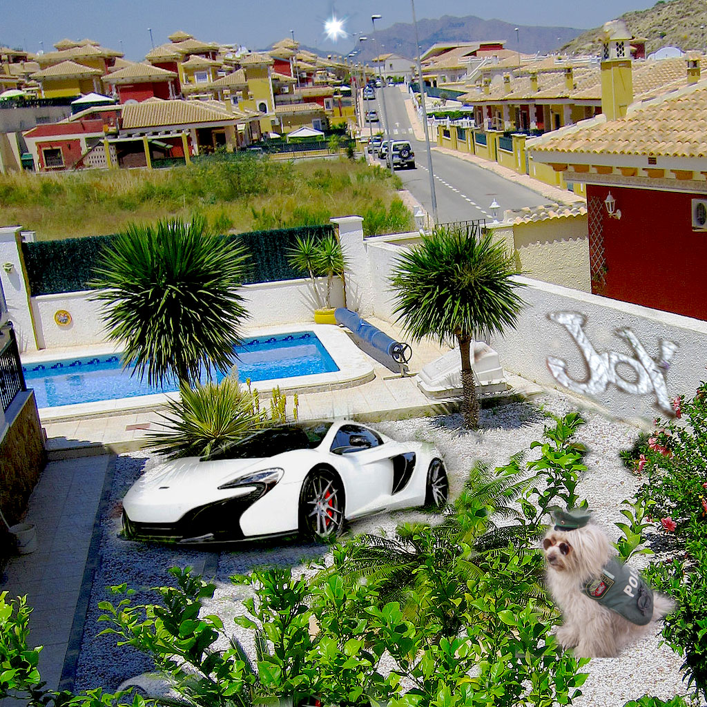

My raster image project is just the combination of what I would like the most in life. I want later in life to live in a beautiful house, in a sunny country, with a nice car, a beautiful dog, a nice pool, and most importantly my family. When I was realizing the project I created a semblance of a dream house with all the things that I wanted the most even if I expected better. My character wants to be happy and wants to live in a peaceful environment under the sun. On the project, peace and comfort of my character emerge through her environment. On my project, I combine 5 images. My sources of inspiration are just what I aspire for myself and what I like. using Photoshop was a challenge and what I found the most difficult was to blend all of my images together and understand the photoshop tools and how it works. The raster project was the first one we completed. I didn't have any knowledge about how to use what, learning everything from scratch was a challenge but as the vector image youtube videos helped me a lot. The professor's guidance was also a good help while completing the project. I solved my issues by being concentrated and resilient.
